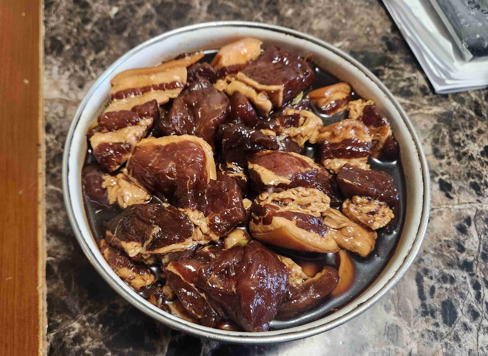

Zongzi (China)★
 30 servings (1/serving)
30 servings (1/serving) 5 hours
5 hours-
 Grandmother
Grandmother
 Meat
Meat Salty
Salty Umami
Umami
Cooked on July 1/2, 2023.
My sixth recipe! One of my childhood favorites, I went to my grandmother’s to learn her famous recipe (Meat Zongzi). Since China’s actual national dish (Peking Duck) is near impossible to make at home, I decided to learn one of my grandmother’s recipes. Zongzi is essentially a stick rice dumpling, which is a tradition to eat during the Dragonboat (Duanwu) Festival. It is a pretty complicated recipe, but I hope you enjoy it!
Rating 10/10. I have always loved this dish as a child, and would love to share this dish with others. It can also be served with red bean paste or salty duck egg yolk, but I prefer the meat version. However, it is by far the most complicated recipe (especially the wrapping part). Family friends and locals say my grandma makes some of the best Zongzi they have ever had, and I hope to master this recipe some day.

Prep (Day Before)
60bamboo leaves2.5 lbpork belly (cut into 1 inch squares)
Soak the bamboo leaves in cold water overnight.
Then, wash the bamboo leaves in hot water the following day.
Boil the leaves for around 10 minutes, or until soft.
If there are any extra leaves, it can be used another time (but must be boiled soft again).

Marinating (Day Before)
8 ingreen onion (cut into small pieces)2 inginger (cut into thin slices)2 tspsalt1 tspground white pepper2 tbspshaoxing cooking wine1 tbspsugar2bouillon cubes (crushed) or1.5 tspchicken bouillon powder1/2 cupsoy sauce1 tbspdark soy sauce
Defrost the pork belly if frozen.
Rinse the pork belly under cold water.
Cut the pork belly into 1 in cubes, then rinse again under cold water.
Place the meat into a large mixing bowl on the side.
Next, mix in the green onion, ginger, salt, white pepper, cooking wine, sugar, bouillon powder/cubes, soy sauce, and dark soy sauce using gloves.
Add sugar to taste.
Let sit in the fridge overnight, or for up to 24 hours.

Prep (Day of)
1 tbspsalt1 tbspbouillon powder1 tbspsugar1 tbspdark soy sauce- Sauce from pork marinade
Fill a very large bowl with the rice. Then, add water and rinse the rice 4-5 times, or until the residue color lightens up.
Let the rice drain (in a large drainer) over a bowl for 10 minutes. Then, put the rice back into the large bowl.
Mix in the salt, bouillon powder, sugar, dark soy sauce, and the sauce from the previous day’s marinade into the rice mix. Mix until the color is as shown in the following picture. Adjust for color with the dark soy sauce.

Wrapping
Watch the video below for a visual demonstration of the wrapping process.
Take one bamboo leaf (or two if the leaves are small or have small rips in them and overlap them).
For each leaf or leaves, fold it hot dog style down the center and fold over the top section (1.5 in) to the right. Hold your non-dominant arm out and place the leaf along your non-dominant arm, with the top fold nestled between your index and your middle finger.
It is essential to keep the top fold tight, but make sure the two sides are even.
Spread some rice inside the fold at the top, then make a small indentation in the middle to place one or two pieces of pork inside it.
Place one or two pieces of meat inside the indentation.
Then, spread some more rice to cover the meat.
Fold the bottom of the leaf over the top.
Next, wrap the sides down gently so that it is in the shape of a triangle. Make sure the bottom corners are pointy. Do one side at a time, using your non-dominant hand to hold the wrapped leaf in place or to block any small holes.
If necessary, wrap an additional bamboo leaf around the sides (around the top edge) to secure the sides.
Make sure to wipe any excess rice off the sides and the top fold using a chopstick of your finger (very important)
Holding the zong zi in its triangle shape, tie the cooking string around and around the Zongzi horizontally to keep its shape while cooking.
The most important part of this whole wrapping process is that all folds are held down by your fingers, it is extremely difficult and usually takes years of practice!


Cooking
- Instant pot
Place the wrapped Zongzi inside teh instant pot, and fill with water until the water level is just below the top of the Zongzi.
Cook on high pressure for 1 hour, then let the pressure release naturally for 30 minutes.
Add water to the instant pot until the water level is just below the top of the Zongzi. Then cook on high pressure for another 50 minutes, and let the pressure release naturally for 30 minutes.
Repeat for more batches of Zongzi.
Do not place more than 15 Zongzi in the instant pot, as it will not fit.
Unwrap the Zongzi to serve hot!


More Content!
Below is a picture of all of the ingredients used. Don’t be fooled, it is a lot more complicated then just the ingredients! The final product (30 Zongzi!) is also below.